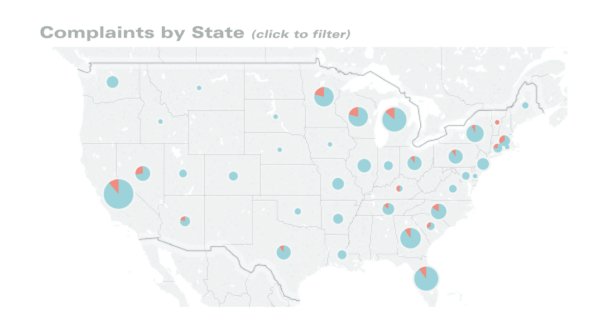
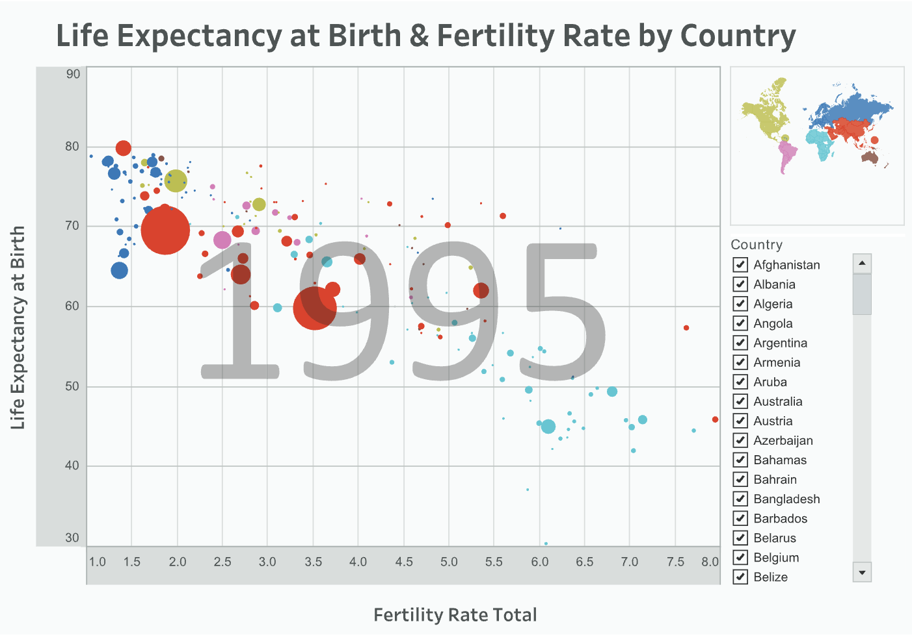
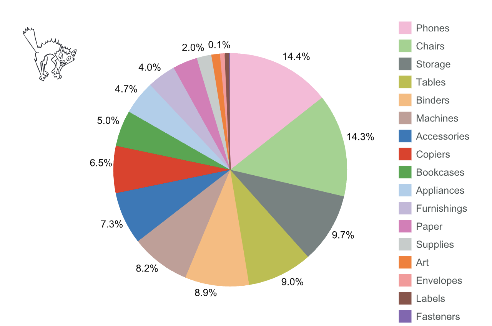
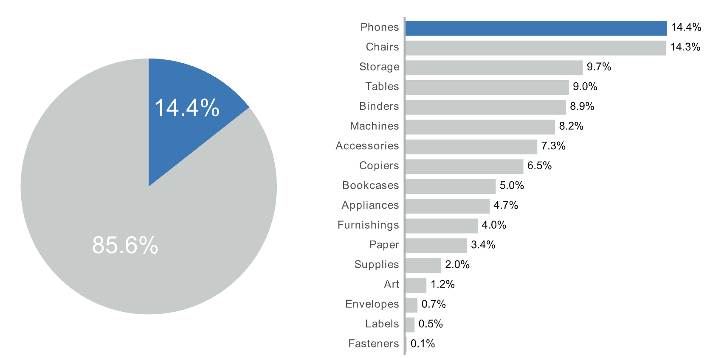
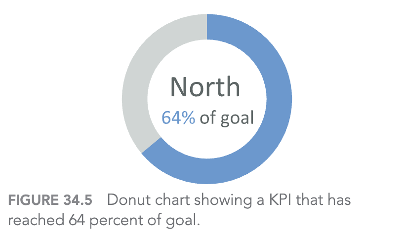
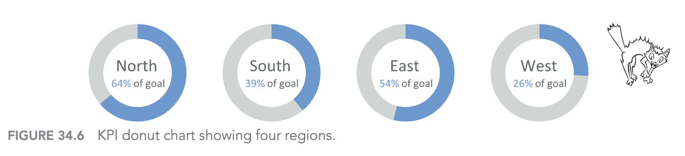
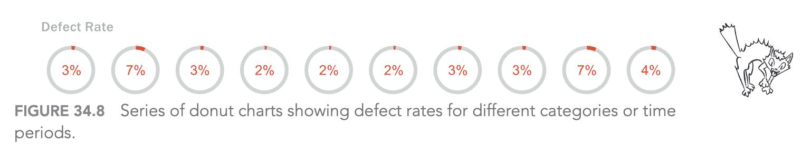
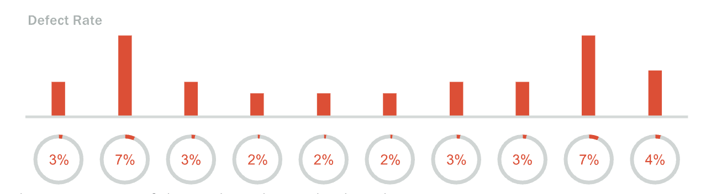
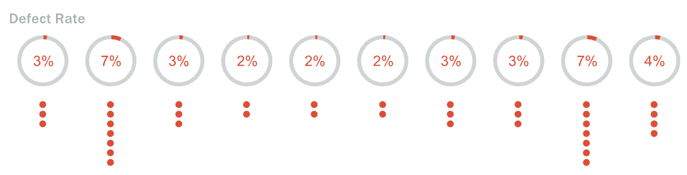

Sự cám dỗ của biểu đồ tròn và donut
Chapter 34: The Allure of Pies and Donuts
Chủ đề: khi nào pie/donut chart có thể dùng được
Trọng tâm: so sánh định lượng và các phương án thỏa hiệp
Thông điệp chính: nếu buộc phải dùng biểu đồ tròn, hãy bổ sung cách mã hóa dễ đọc hơn
Thuyết trình bởi: Nhóm 2
Vấn đề cốt lõi
Pie chart và donut chart thường gây khó vì người xem phải so sánh:
- Góc của các lát cắt
- Cung trên đường tròn
- Diện tích hoặc kích thước hình tròn
- Nhiều màu và nhiều nhãn cùng lúc
Nguyên tắc cần nhớ: chiều dài/vị trí thường dễ so sánh hơn góc/cung/diện tích.
Ngoại lệ 1: pie chart trên bản đồ

Hình 34.1: Pie chart trên bản đồ thể hiện khiếu nại đã đóng và đang mở.
Ngoại lệ 2: kích thước hình tròn là mã hóa phụ

Hình 34.2: Scatterplot so sánh tuổi thọ và tỷ lệ sinh; kích thước hình tròn biểu thị dân số.
Khi khách hàng muốn pie chart nhiều danh mục

- 17 danh mục doanh thu
- Mỗi danh mục một màu
- Phải đọc qua lại giữa lát cắt và legend
- Khó thấy chênh lệch nhỏ giữa các nhóm
Thỏa hiệp tốt hơn: pie chart + bar chart

- Chỉ highlight một lát cắt quan trọng
- Gom phần còn lại thành màu xám
- Thêm bar chart để so sánh chính xác
- Vẫn giữ pie chart theo yêu cầu của stakeholder
Donut chart làm KPI đơn

- Phù hợp hơn khi chỉ có một giá trị
- Không yêu cầu so sánh nhiều danh mục
- Dễ hiểu nếu mục tiêu có giới hạn trên là 100%
- Ví dụ: North đạt 64% mục tiêu
Donut chart yếu khi phải so sánh nhiều vùng

- North, East, South, West đều có donut riêng
- Người xem dễ phải dựa vào nhãn số bên trong
- Khó so sánh nhanh các mức gần nhau
- Nếu vượt 100%, donut chart càng khó thể hiện
Khi stakeholder vẫn muốn "nhiều donut"

Hình 34.8: Chuỗi donut chart thể hiện defect rate theo danh mục hoặc thời gian.
Bổ sung bar chart để cứu khả năng so sánh

- Donut vẫn đáp ứng yêu cầu hình thức
- Bar chart phía trên tạo baseline chung
- Chênh lệch nhỏ như 2% và 3% dễ thấy hơn
- Mắt người đọc phần bar trước, donut trở thành ngữ cảnh phụ
Hoặc dùng dot plot để thể hiện từng phần trăm

- Mỗi chấm đại diện cho 1% defect
- Số lượng chấm giúp so sánh trực tiếp
- Dễ nhận ra nhóm 7% nhiều hơn nhóm 3%
- Phù hợp khi giá trị nhỏ và rời rạc
Kết luận
3 bài học chính
- Pie/donut chart chỉ nên dùng cẩn trọng, nhất là khi cần so sánh chính xác
- Nếu buộc phải dùng, hãy giảm số lát cắt và dùng màu nhấn có chủ đích
- Bổ sung bar chart hoặc dot plot để người xem đọc dữ liệu tốt hơn
Q&A